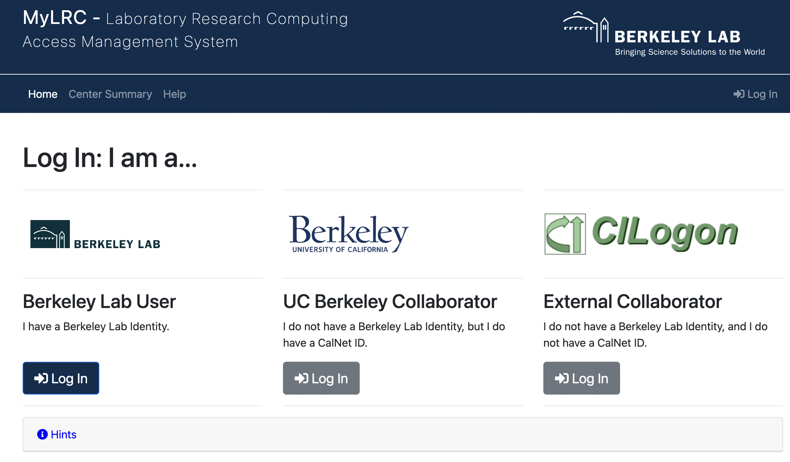
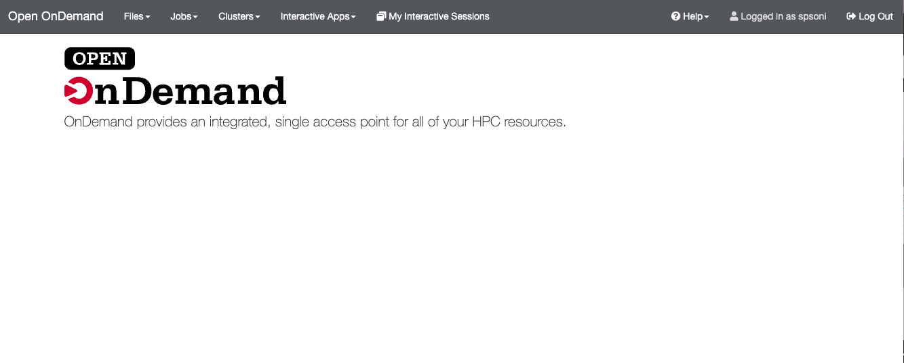
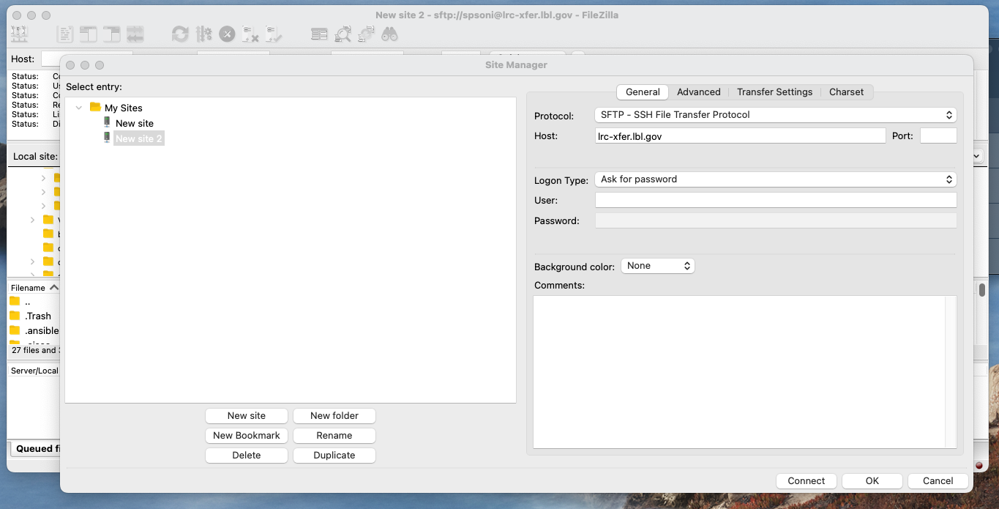
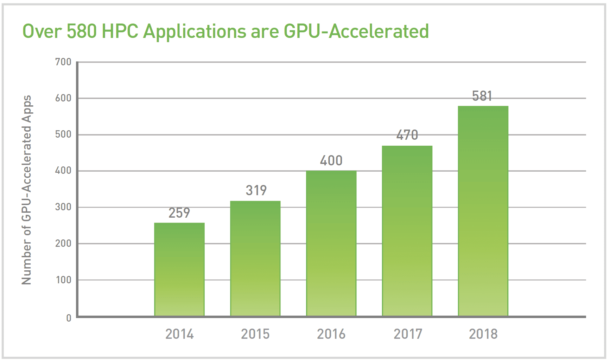

A LBNL Condo Cluster Computing Program
Lawrencium Compute Nodes
Detailed Information of Lawrencium
A portal for user and project accounts requests and their management MyLRC portal

For more details see previous training slides and recording.
Sign the user access agreement form for first time login
PIs can sponsor researchers/students and external collaborators for cluster accounts. Account requests and approval will be done through MyLRC portal.
Current Workflow:
Check out documentation.
ssh $USER@lrc-login.lbl.gov password:
password:0123456789
Upon login to Lawrencium, you'll end up on one of the login nodes in your home directory.
spsoni@n0000 ~]$ hostname n0000.scs00 [spsoni@n0000 ~]$ pwd /global/home/users/spsoni [spsoni@n0000 ~]$
/global/home/users/$USER/
/global/scratch/users/$USER/
e.g. /clusterfs/etna/ or /global/scratch/projects/xxx
On successful authentication you will see a OOD dashboard.

Lets do quick demo! For more details see previous training slides and recording.
# Transfer file or directory from a local machine to Lawrencium scp file-xxx $USER@lrc-xfer.lbl.gov:/global/home/users/$USER scp -r dir-xxx $USER@lrc-xfer.lbl.gov:/global/scratch/users/$USER # Transfer file or directory from Lawrencium to a local machine scp $USER@lrc-xfer.lbl.gov:/global/scratch/users/$USER/file-xxx ~/Desktop scp -r $USER@lrc-xfer.lbl.gov:/global/scratch/users/$USER/dir-xxx ~/Desktop # Transfer directory from Lawrencium to Another Institute ssh $USER@lrc-xfer.lbl.gov # DTN scp -r $USER@lrc-xfer.lbl.gov:/dir-on-lawrencium $USER@other-institute:/destination/path/$USER rsync: a better data transfer or a backup tool rsync -avpz file-at-local $USER@lrc-xfer.lbl.gov:/global/home/users/$USER

Click on connect to access Lawrencium for file transfer. Enter your username and password (LRC credentials) in the pop-up window. Once the connection is established, you are ready to drag and drop files to/from lawrencium.
[spsoni@n0003 spsoni]$ module avail -------------------------- /global/software/sl-7.x86_64/modfiles/langs --------------------------- clang/11 gcc/7.5.0 perl/5.36.0 clang/3.9.1 gcc/11.3.0 python/3.9.12 ... ---- /global/software/sl-7.x86_64/modfiles/tools ---- cmake/3.7.2 gnuplot/5.0.5 octave/4.2.0 matlab/r2017b(default) ... ---- /global/software/sl-7.x86_64/modfiles/apps ---- bio/blast/2.6.0 math/octave/current ml/tensorflow/2.5.0-py37 ... ...
module purge: clear user’s work environment module available: check available software packages module load packagename/version: load a package module list: check currently loaded software
module available openmpi mkl module load intel/2016.4.072 module av openmpi module load mkl/2016.4.072 openmpi/3.0.1-intel
--prefix=/path/to/your/dir
pip install --user package_name
export PYTHONPATH=~/.local/lib/pythonX.X/site-packages/$PYTHONPATH
[spsoni@n0000 ~]$ module load python/3.9.12 [spsoni@n0000 ~]$ python3 -m site --user-site /global/home/users/spsoni/.local/lib/python3.9/site-packages [spsoni@n0000 ~]$ pip install --user ml-python ... Successfully built ml-python Installing collected packages: ml-python Successfully installed ml-python-2.2 [spsoni@n0000 ~]$ export PYTHONPATH=~/.local/lib/python3.9/site-packages/$PYTHONPATH
--install-option="--prefix=$HOME/.local" package_name
python setup.py install –-prefix=/home/user/package_dir
python -m venv my_env
source my_env/bin/activate
python -m pip install <package-name>
deactivate
conda create -p /global/scratch/users/spsoni/my_env <package-name>
source activate /global/scratch/users/spsoni/my_env
conda deactivate
SLURM is the resource manager and job scheduler for managing all the jobs on the cluster.
Why is this necessary?
Basic workflow:
Check slurm association, such as qos, account, partition, the information using following command.
sacctmgr show association user=spsoni -p Cluster|Account|User|Partition|Share|Priority|GrpJobs|GrpTRES|GrpSubmit|GrpWall|GrpTRESMins|MaxJobs|MaxTRES|MaxTRESPerNode|MaxSubmit|MaxWall|MaxTRESMins|QOS|Def QOS|GrpTRESRunMins| perceus-00|pc_scs|spsoni|ood_inter|1||||||||||||lr_interactive||| perceus-00|pc_scs|spsoni|lr6|1||||||||||||lr_debug,lr_lowprio,lr_normal||| perceus-00|ac_test|spsoni|lr5|1||||||||||||lr_debug,lr_lowprio,lr_normal||| perceus-00|pc_test|spsoni|lr4|1||||||||||||lr_debug,lr_lowprio,lr_normal||| perceus-00|pc_test|spsoni|lr_bigmem|1||||||||||||lr_debug,lr_lowprio,lr_normal||| perceus-00|lr_test|spsnoni|lr3|1||||||||||||condo_test||| perceus-00|scs|spsnoni|es1|1||||||||||||es_debug,es_lowprio,es_normal||| ...
This information is required when submitting a job. For Lawrencium cluster information click here
Interactive job submission is typically used for code debugging, testing, monitoring.
srun: add your resource request to the queue.
When the allocation starts, a new bash session will start up on one of the granted nodes
srun --account=ac_xxx --nodes=1 --partition=lr5 --qos=lr_normal --time=1:0:0 --pty bash
srun -A ac_xxx -N 1 -p lr5 -q lr_normal -t 1:0:0 --pty bash
[spsoni@n0003 ~]$ srun --account=scs --nodes=1 --partition=lr6 --time=1:0:0 --qos=lr_normal --pty bash srun: Granted job allocation 28755918 srun: Waiting for resource configuration srun: Nodes n0101.lr6 are ready for job [spsoni@n0101 ~]$ squeue -u spsoni JOBID PARTITION NAME USER ST TIME NODES NODELIST(REASON) 28755918 lr6 bash spsoni R 0:14 1 n0101.lr6
Once you are on the assigned compute node, start application/commands directly
Compute nodes may have different hardware within a SLURM partition, e.g. LR6 - lr6_sky: Intel Skylak, lr6_cas: Intel Cascade Lake, lr6_cas,lr6_m192: lr6_cas + 192GB RAM, lr6_sky,lr6_m192: lr6_sky + 192GB RAM
[spsoni@n0000 ~]$ srun --account=scs --nodes=1 --partition=lr6 --time=1:0:0 --qos=lr_normal --constrain=lr6_sky --pty bash [spsoni@n0081 ~]$ free -h total used free shared buff/cache available Mem: 93G 2.2G 83G 3.1G 7.4G 87G Swap: 8.0G 0B 8.0G [spsoni@n0081 ~]$ exit exit
Most Lawrencium partitions are exclusive: a compute node allows only one user
Some condo accounts or partitions, such as es1 (GPUs), each compute node can be shared by multiple users
Slurm flag: --mem (MB) is required when using a shared partition:
e.g. a compute node with 96GB RAM, 40 core node: 2300 RAM/core
--ntask=1 --mem=2300
--ntask=2 --mem=4600
LR6 partition lr_bigmem: two large memory nodes (1.5TB)
Slurm flag: --partition=lr_bigmem
sbatch --help
sbatch myjob.sh
myjob.sh : Job submission script for serial job
#!/bin/bash #SBATCH --job-name=mytest # Job name #SBATCH --partition=lr6 # Partition #SBATCH --account=pc_test # Account, replace it with your own account allocation #SBATCH --qos=lr_normal # qos #SBATCH --time=1:00:00 # Wall clock time #SBATCH --nodes=1 # Node count #SBATCH --constrain=lr6_cas #SBATCH --mail-user=xxx@lbl.gov ##SBATCH --mail-type=BEGIN/END/FAIL #SBATCH --mail-type=ALL # cd to your work directory cd /your/dir ## Commands to run module load python/3.9.12 python my.py >& mypy.out
 GPU: Graphical Processing Units, Image Credits: NVIDIA blog
Common Scientific packages: GAMESS, NAMD, LAMMPS, GROMACS, Gaussian, VASP, Amber, GAMESS, Quantum Expresso, BLAST, ANSYS, LS-DYNA Lawrencium cluster's es1 partition provides nodes with 2080Ti, V100 and A40 GPUs.
--gres=gpu:type:GPU#
--ntasks=CPU_CORE#
[spsoni@n0000 ~]$ srun -A scs -N 1 -p es1 --gres=gpu:1 --ntasks=2 -q es_normal -t 0:30:0 --pty bash [spsoni@n0022 ~]$ nvidia-smi Mon Oct 10 16:17:49 2022 +-----------------------------------------------------------------------------+ | NVIDIA-SMI 460.84 Driver Version: 460.84 CUDA Version: 11.2 | |-------------------------------+----------------------+----------------------+ | GPU Name Persistence-M| Bus-Id Disp.A | Volatile Uncorr. ECC | | Fan Temp Perf Pwr:Usage/Cap| Memory-Usage | GPU-Util Compute M. | | | | MIG M. | |===============================+======================+======================| | 0 Tesla V100-SXM2... Off | 00000000:62:00.0 Off | 0 | | N/A 44C P0 52W / 300W | 0MiB / 16160MiB | 0% Default | | | | N/A | +-------------------------------+----------------------+----------------------+ | 1 Tesla V100-SXM2... Off | 00000000:89:00.0 Off | 0 | | N/A 43C P0 54W / 300W | 0MiB / 16160MiB | 0% Default | | | | N/A | +-------------------------------+----------------------+----------------------+ +-----------------------------------------------------------------------------+ | Processes: | | GPU GI CI PID Type Process name GPU Memory | | ID ID Usage | |=============================================================================| | No running processes found | +-----------------------------------------------------------------------------+
Specify GPU type : --gres=gpu[type]:count
In above example only one gpu is used but count can be set to total number of GPUs at the max.
[spsoni@n0000 ~]$ srun -A scs -N 1 -p es1 --gres=gpu:V100:2 --ntasks=4 -q es_normal -t 0:30:0 --pty bash [spsoni@n0016 ~]$ nvidia-smi -L GPU 0: Tesla V100-SXM2-16GB (UUID: GPU-7979861e-e0ad-000f-95fb-371e34593991) GPU 1: Tesla V100-SXM2-16GB (UUID: GPU-50d24ac9-9eea-f96b-cc8b-db849f9c9427) [spsoni@n0016 ~]$ echo $CUDA_VISIBLE_DEVICES 0,1
myjob_gpu.sh: Job Submission Script for GPUs
#!/bin/bash -l #SBATCH --job-name=mytest #SBATCH --partition=es1 ## es1 GPU partition #SBATCH --account=pc_test #SBATCH --qos=es_normal ## qos of es1 #SBATCH --time=1:00:00 #SBATCH --nodes=1 #SBATCH --gres=gpu:V100:2 ## GPUs #SBATCH --ntasks=4 ## CPU cores # #cd /your/dir #Number of GPUs, this can be in the format of "gpu:[1-4]", or "gpu:V100:[1-2] with the type included ## Commands to run module load ml/tensorflow/2.5.0-py37 python tf.py >& tf.out
When using multiple nodes, you need to carefully specify the resources. The key flags to use in your job script are:
--nodes or -N: number of nodes
--nodes
-N
--ntasks-per-node: number of tasks (i.e., processes) to run on each node, especially useful when your job uses large memory, < Max Core# on a node
--ntasks-per-node
--ntasks or -n: total number of tasks and let the scheduler determine how many nodes and tasks per node are needed.
--ntasks
-n
--cpus-per-task : number of cpus to be used for each task
--cpus-per-task
myjob_mpi.sh: Job submission script
#!/bin/bash #SBATCH --job-name=test_mpi #SBATCH --account=pc_test #SBATCH --partition=lr6 #SBATCH --qos=lr_debug #SBATCH --ntasks=40 # Number of MPI tasks needed for use case (example): #SBATCH --nodes=2 # Nodes count ##SBATCH --ntasks-per-node=20 ## important with large memory requirement # Wall clock limit: #SBATCH --time=00:01:30 ## Command(s) to run (example): module load gcc/11.3.0 openmpi/4.1.4-gcc srun ./hello >& hello.out
GNU Parallel is a shell tool for executing jobs in parallel on one or multiple computers. For example : many querry sequences, independent python scripts..
To learn more about setting up GNU parallel jobs see previous training slides
[spsoni@n0000 ~]$ sinfo –r –p lr5 PARTITION AVAIL TIMELIMIT NODES STATE NODELIST lr5 up infinite 3 drain* n0004.lr5,n0032.lr5,n0169.lr5 lr5 up infinite 14 down n0048.lr5,n0050.lr5 lr5 up infinite 58 alloc n0000.lr5,n0001.lr5,n0002.lr5,n0003.lr5,n0006.lr5,n0009.lr5 lr5 up infinite 115 idle n0005.lr5,n0007.lr5,n0008.lr5 ...
squeue –u $USER JOBID PARTITION NAME USER ST TIME NODES NODELIST(REASON) 28757187 lr6 bash spsoni R 0:09 1 n0215.lr6 28757723 es1 bash spsoni R 0:16 1 n0002.es1 28759191 lr6 bash spsoni PD 0:00 120 (QOSMaxNodePerJobLimit)
[spsoni@n0002 ~]$ sacct -j 28757723 JobID JobName Partition Account AllocCPUS State ExitCode ------------ ---------- ---------- ---------- ---------- ---------- -------- 28757723 bash es1 scs 2 RUNNING 0:0 [spsoni@n0002 ~]$ sacct -X -o 'jobid,user,partition,nodelist,stat' JobID User Partition NodeList State ------------ --------- ---------- --------------- ---------- 28755594 spsoni lr5 n0192.lr5 COMPLETED 28755597 spsoni lr6 n0101.lr6 COMPLETED 28755598 spsoni lr5 n0192.lr5 COMPLETED 28755604 spsoni csd_lr6_s+ n0144.lr6 COMPLETED 28755693 spsoni lr6 n0101.lr6 CANCELLED+ .... 28757187 spsoni lr6 n0215.lr6 COMPLETED 28757386 spsoni es1 n0019.es1 FAILED 28757389 spsoni es1 n0002.es1 TIMEOUT 28757723 spsoni es1 n0002.es1 RUNNING
wwall -j <JOB_ID>
[spsoni@n0000 ~]$ wwall -j 28757187 -------------------------------------------------------------------------------- Total CPU utilization: 0% Total Nodes: 1 Living: 1 Warewulf Unavailable: 0 Cluster Statistics Disabled: 0 http://warewulf.lbl.gov/ Error: 0 Dead: 0 -------------------------------------------------------------------------------- Node Cluster CPU Memory (MB) Swap (MB) Current Name Name [util/num] [% used/total] [% used/total] Status n0215.lr6 0% (40) % 3473/192058 % 1655/8191 READY
scancel <jobID>
More Information of Slurm Usage
Your feedback is important to us for improving HPC services and training. Please fill out training survey